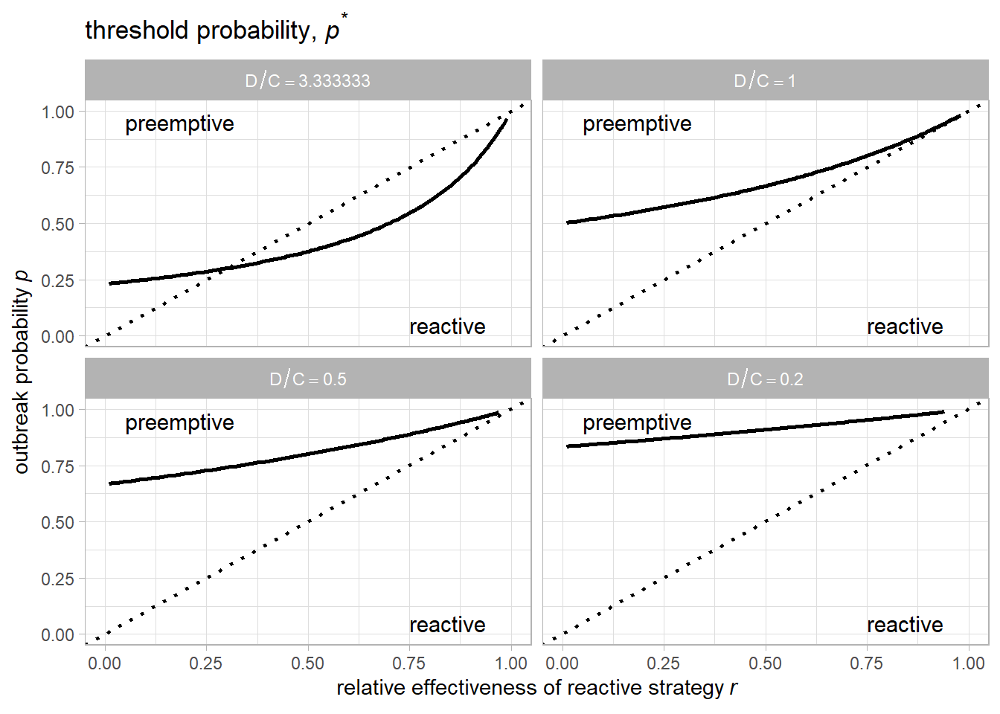
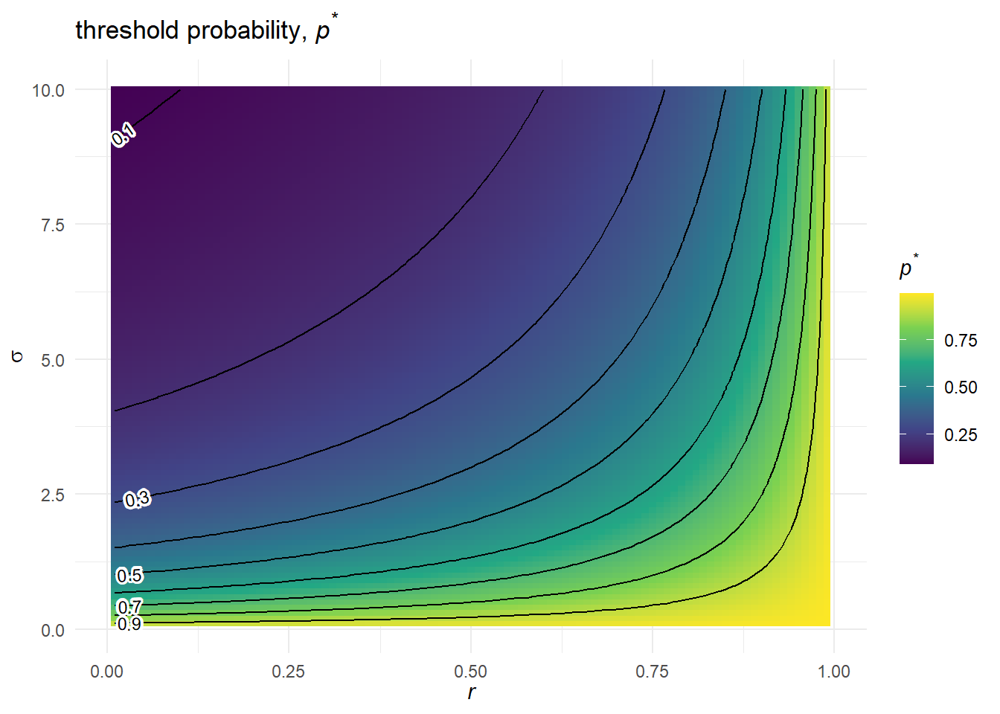
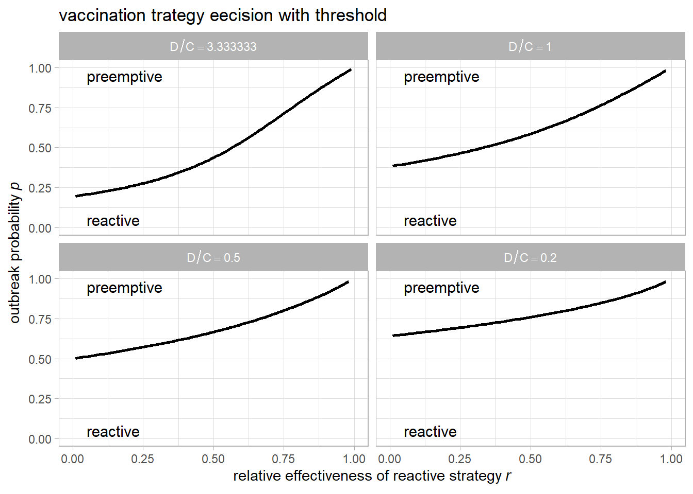
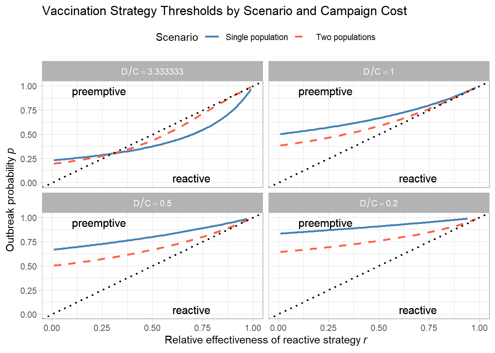
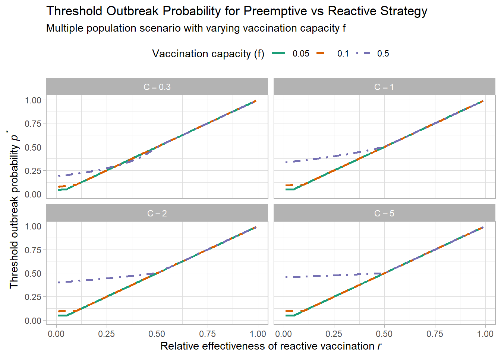
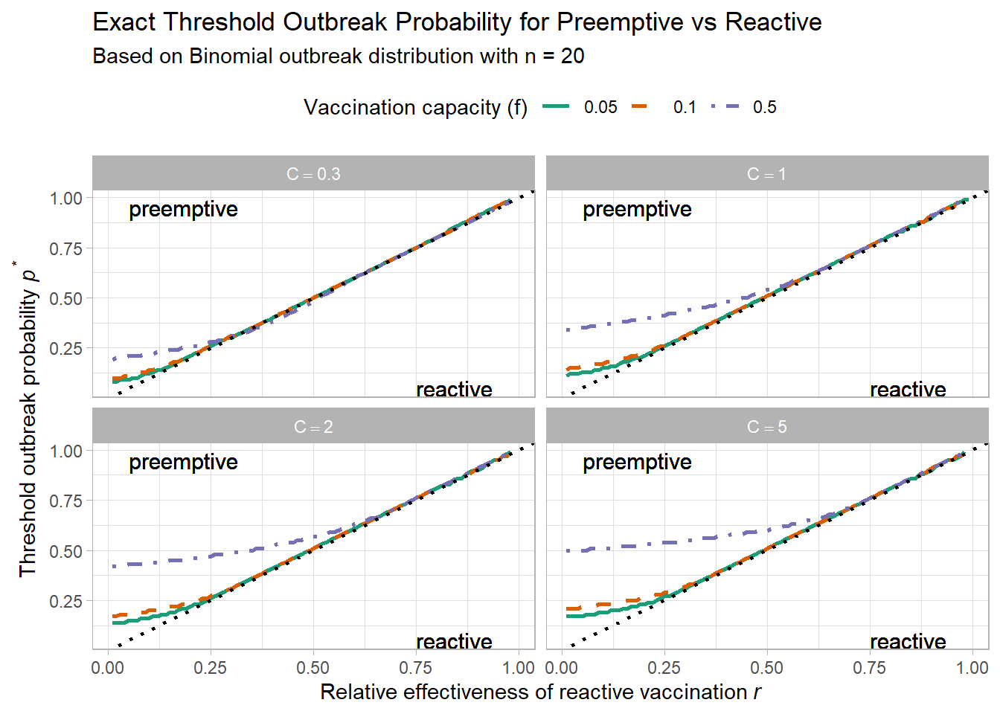
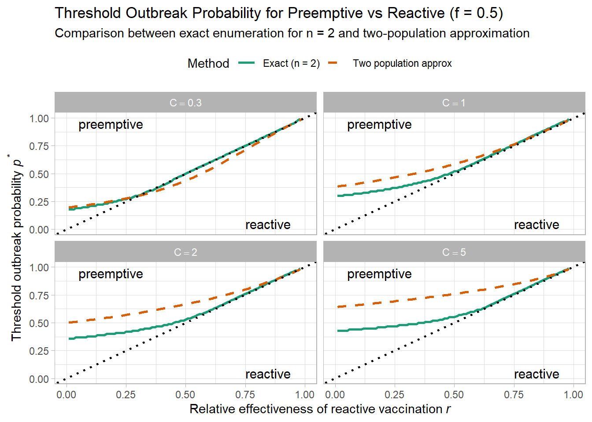
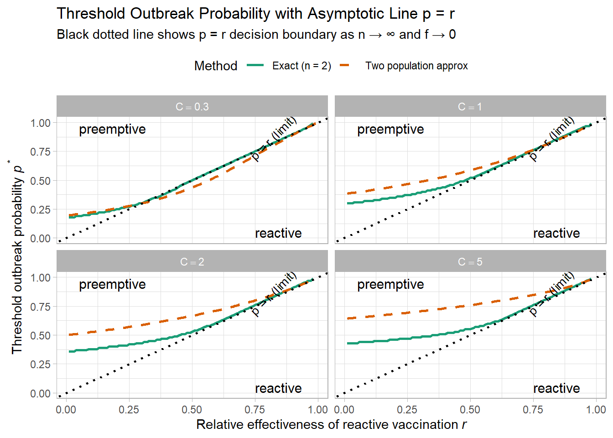
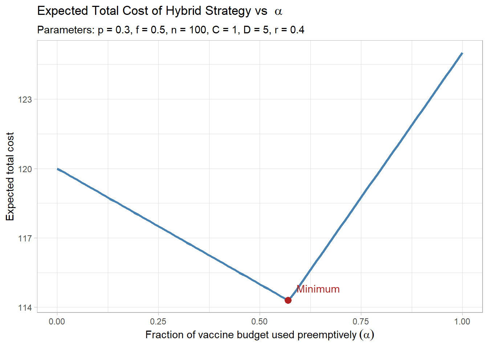
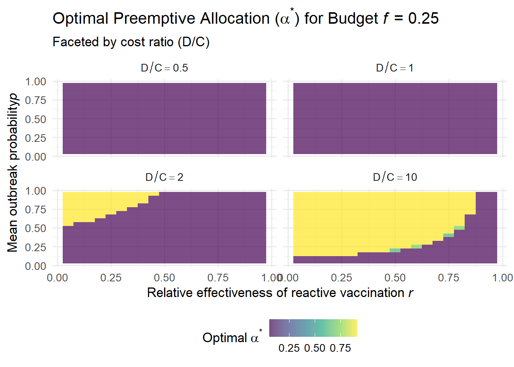

Oral cholera vaccines (OCVs) are an important tool for cholera control. Vaccine can be used reactively and premptively. This strategic choice carries high stakes for both health outcomes and resource utilization. Preemptive vaccination can avert outbreaks by immunizing at-risk populations in advance, but it incurs upfront costs and risks vaccinating for an outbreak that might never occur. Reactive vaccination, in contrast, targets outbreaks once they are detected, potentially saving doses and avoiding unnecessary campaigns; however, losses accrue before control measures take effect,
This dilemma is complicated by uncertainty. Outbreak risks vary between populations due to heterogeneous social, environmental, and biological factors, yet risk forecasts are imperfect (Wells et al. 2020). If authorities had perfect information, they could vaccinate high-risk populations in advance. In practice, risk estimates may be noisy, leading to misallocation of limited vaccines and potential failure to prevent major outbreaks (Colijn, Worby, and Lipsitch 2021).
Models from diverse diseases highlight that no one strategy is best across settings. Studies on mpox, hepatitis E, and MERS-CoV suggest that preemptive campaigns can be life-saving if outbreaks are severe or grow quickly (Quilty et al. 2023; Azman et al. 2019; Wells et al. 2020). Conversely, reactive strategies may use doses more efficiently when supply is constrained or preemptive coverage is uncertain (Middleton and Larremore 2024).
Despite these insights, no unifying quantitative framework exists to compare reactive and preemptive vaccination, in particular under varying outbreak probability, resource availability, and risk uncertainty. Our study addresses this gap by developing an analytic and simulation-based framework for identifying the optimal allocation of vaccine resources across populations with potentially heterogeneous and uncertain risk.
Through analytical derivation and simulation, we characterize the impact of outbreak probability (\(p\)), reactive efficacy (\(r\)), vaccine budget (\(f\)), and targeting accuracy (Spearman rank correlation \(\rho\)) on strategy performance. Our results offer practical guidance for policymakers deciding how much to invest in preemptive campaigns when vaccine stockpiles are constrained and risk signals are imperfect.
3 The Model
3.1 The Single Population Scenario
We evaluate the expected total cost of two strategies (preemptive vs reactive vaccination) for a single population at risk of an outbreak. Parameters are:
\(D\): The full cost of an outbreak (e.g., cases, deaths, DALYs)
\(C\): The cost of deploying a vaccination campaign
\(\sigma = D/C\)
\(p\): The probability of an outbreak (\(0<p<1\))
\(r\): The relative effectiveness (in terms of case reduction) of a reactive vaccination campaign compared to the preemptive vaccination campaign (\(0<r<1\))
3.2 Strategy 1: Preemptive Vaccination
Under a preemptive vaccination scenario, we vaccinate regardless of whether an outbreak happens. We assume that outbreak is fully averted if it would have occurred under a preemptive vaccination. In other words, expected outbreak cost is \(0\) and we always pay vaccination cost \(C\).
Total cost under a preemptive vaccination is \[
\text{Cost}_{\text{pre}} = C
\]
3.3 Strategy 2: Reactive Vaccination
Under a reactive vaccination scenario, we vaccinate only if an outbreak occurs (probability \(p\)). The outbreak is only partially mitigated with remaining cost being \((1 - r)D\). Vaccination cost \(C\) is incurred only when outbreak happens.
Total cost under a reactive vaccination is \[
\text{Cost}_{\text{react}} = p \cdot (C + (1 - r)D)
\]
3.4 Comparing the two strategies
We prefer preemptive vaccination when:
\[
C < p \cdot (C + (1 - r)D)
\]
Solving for \(p\):
\[
p^* = \frac{C}{C + (1 - r)D}
\]
This is the threshold outbreak probability above which preemptive vaccination is cost-saving compared with the reactive vaccination.
3.4.1 Interpretation
As \(r \to 1\), reactive vaccination becomes nearly as effective as preemptive, threshold \(p^*\) increases
As the cost of an outbreak compared to the vaccination cost, \(\sigma = D / C\), becomes large, threshold \(p^*\) decreases
3.5 Symbolic derivation for \(p^*\)
Code
import sympy as sp# Define symbolsC, D, p, r = sp.symbols('C D p r', positive=True)# Define cost expressionscost_pre = Ccost_react = p * (C + (1- r)*D)# Solve: when is preemptive better?ineq = sp.Eq(cost_pre, cost_react)p_thresh = sp.solve(ineq, p)[0]p_thresh
C/(C - D*r + D)
3.6 Visualizing the decision plane across \(p\) and \(r\)
As \(r\) increases, reactive vaccination is preferred. As \(p\) increases, preemptive vaccination is preferred. As the \(\sigma=D/C\) increase, preemptive vaccination is preferred.
Code
# Parametersr_vals <-seq(0.01, 0.99, by =0.01)p_vals <-seq(0.01, 0.99, by =0.01)D <-1C_vals <-c(0.3, 1, 2, 5)# Create evaluation gridgrid <-expand.grid(p = p_vals, r = r_vals, C = C_vals) %>%mutate(# Total cost for each strategycost_pre = C,cost_react = p * (C + (1- r)*D),decision =ifelse(cost_pre < cost_react, "preemptive", "reactive") )# Threshold lines: where cost_pre == cost_reactthreshold_lines <- grid %>%group_by(C, r) %>%summarise(p_thresh =approx(cost_pre - cost_react, p, xout =0)$y,.groups ="drop" ) %>%filter(!is.na(p_thresh))labels_df <-data.frame(C =rep(C_vals, each =2),label =rep(c("preemptive", "reactive"), 4),r =rep(c(0.05, 0.75), 4),p =rep(c(0.95, 0.05), 4))ggplot(grid, aes(x = r, y = p)) +geom_line(data = threshold_lines, aes(x = r, y = p_thresh, group = C), color ="black", linewidth =1, inherit.aes =FALSE) +geom_abline(slope =1, intercept =0, color ="black", linetype ="dotted", linewidth =0.8) +geom_text(data = labels_df, aes(x = r, y = p, label = label),hjust =0, color ="black", size =4, inherit.aes =FALSE) +scale_y_continuous(limits=c(0,1))+scale_x_continuous(limits=c(0,1))+scale_fill_manual(values =c("preemptive"="steelblue", "reactive"="tomato")) +facet_wrap(~C, labeller =label_bquote(D/C == .(D/C))) +labs(title =bquote("threshold probability, "*italic(p)^"*"), x =expression("relative effectiveness of reactive strategy"~italic(r)),y =expression("outbreak probability"~italic(p)),fill ="Strategy" ) +theme_light() +theme(legend.position ='top')

3.7 Visualizing the threshold \(p^*\)
Threshold probability \(p^*\), above which preemptive vaccination is preferred, increases as the relative effectiveness \(r\) and the cost of the outbreak \(D\) relative to the cost of a vaccination campaign \(C\), \(\sigma\), decreases.
Code
# install.packages("metR") # Run this if you haven't installed it yetlibrary(metR)# Parametersr_vals <-seq(0.01, 0.99, by =0.01)# C_vals <- seq(0.1, 10, by = 0.1)D <-1sigma_vals <-seq(0.1, 10, by =0.1)# Create evaluation gridgrid <-expand.grid(r = r_vals, sigma = sigma_vals, D = D) %>%mutate(C = D / sigma, # threshold probabilityp_thresh = C / (C + (1- r) * D) # threshold probability )# Plot with contour labelsggplot(grid, aes(x = r, y = sigma, fill = p_thresh)) +geom_tile() +geom_contour(aes(z = p_thresh), color ="black", linewidth =0.5) +geom_text_contour(aes(z = p_thresh), stroke =0.2, size =3, color ="black") +scale_fill_viridis_c() +labs(title =bquote("threshold probability, "*italic(p)^"*"),x =expression(italic(r)),y =expression(sigma),fill =expression(italic(p)^"*") ) +theme_minimal()

3.8 Summary
This tradeoff depends jointly on: probability of an outbreak (\(p\)), relative effectiveness of a reactive strategy(\(r\)), cost of prevention (\(C\)), and the cost of an unmitigated outbreak (\(D\))
4 Two-population scenario
We assume:
Two populations, each has an independent probability \(p\) of outbreak
Only one vaccination campaign is available (can be used preemptively or reactively for one population)
Key parameters:
Symbol
Description
\(X\)
Number of outbreaks (\(X=0,1,2\))
\(p\)
Probability of outbreak in a population
\(C\)
Cost of one vaccination campaign
\(D\)
Cost of one unmitigated outbreak
\(r\)
Relative effectiveness of reactive vaccination (\(0<r<1\))
4.1 Preemptive strategy
We vaccinate one population in advance, say population A. No reactive response is used.
4.1.1 Case 0: No outbreaks (\(X = 0\))
Probability: \((1-p)^2\)
Cost: only unnecessary vaccination of A: \(C\)
\[
\text{Cost}_{X=0,\text{pre}} = C
\]
4.1.2 Case 1: One outbreak (\(X = 1\))
Probability: \(2p(1 - p)\)
Two subcases (each with prob. \(p(1 - p)\)):
If outbreak occurs in A (vaccinated): outbreak prevented \(\rightarrow\) cost = \(C\)
If outbreak occurs in B (unvaccinated): outbreak occurs \(\rightarrow\) cost = \(C + D\)
from sympy import symbols, Eq, solve, simplify# Define symbolsp, C, D, r = symbols('p C D r', positive=True)# Total cost of each strategycost_pre = C + p * Dcost_react = (2*p - p**2)*C + (2*p*(1- p)*(1- r) + p**2*(2- r)) * D# Set inequality: preemptive better than reactiveineq = Eq(cost_pre, cost_react)# Solve for threshold pp_thresh = solve(ineq, p)# Simplify solutionsimplified_thresh = [simplify(expr) for expr in p_thresh]# Outputfor i, expr inenumerate(simplified_thresh):print(f"Threshold p solution {i+1}:")print(expr)
library(ggplot2)library(dplyr)# Parametersr_vals <-seq(0.01, 0.99, by =0.01)p_vals <-seq(0.01, 0.99, by =0.01)D <-1C_vals <-c(0.3, 1, 2, 5)# Create evaluation gridgrid <-expand.grid(p = p_vals, r = r_vals, C = C_vals) %>%mutate(# Total cost for each strategycost_pre = C + p * D,cost_react = (2* p - p^2) * C + (2* p * (1- p) * (1- r) + p^2* (2- r)) * D,decision =ifelse(cost_pre < cost_react, "preemptive", "reactive") )# Threshold lines: where cost_pre == cost_reactthreshold_lines <- grid %>%group_by(C, r) %>%summarise(p_thresh =approx(cost_pre - cost_react, p, xout =0)$y,.groups ="drop" ) %>%filter(!is.na(p_thresh))# Labels for each facetlabels_df <-data.frame(C =rep(C_vals, each =2),label =rep(c("preemptive", "reactive"), 4),r =rep(c(0.05, 0.75), 4),p =rep(c(0.95, 0.05), 4))labels_df$sigma_ <-round(D/labels_df$C, digits=1)ggplot(grid, aes(x = r, y = p)) +geom_line(data = threshold_lines, aes(x = r, y = p_thresh, group = C), color ="black", linewidth =1, inherit.aes =FALSE) +geom_abline(slope =1, intercept =0, color ="black", linetype ="dotted", linewidth =0.8) +geom_text(data = labels_df, aes(x = r, y = p, label = label),hjust =0, color ="black", size =4, inherit.aes =FALSE) +scale_y_continuous(limits=c(0,1))+scale_x_continuous(limits=c(0,1))+scale_fill_manual(values =c("preemptive"="steelblue", "reactive"="tomato")) +facet_wrap(~C, labeller =label_bquote(sigma == .(D/C))) +labs(title ="vaccination strategy decision with threshold (n=2)",x =expression("relative effectiveness of reactive strategy"~italic(r)),y =expression("outbreak probability"~italic(p)),fill ="Strategy") +theme_light() +theme(legend.position ='top')

4.4 Compare single and two population scenarios
Code
grid1 <-expand.grid(p = p_vals, r = r_vals, C = C_vals) %>%mutate(# Total cost for each strategycost_pre = C,cost_react = p * (C + (1- r)*D),decision =ifelse(cost_pre < cost_react, "preemptive", "reactive") )grid2 <-expand.grid(p = p_vals, r = r_vals, C = C_vals) %>%mutate(# Total cost for each strategycost_pre = C + p * D,cost_react = (2* p - p^2) * C + (2* p * (1- p) * (1- r) + p^2* (2- r)) * D,decision =ifelse(cost_pre < cost_react, "preemptive", "reactive") )# Combine gridsgrid1 <- grid1 %>%mutate(scenario ="Single population")grid2 <- grid2 %>%mutate(scenario ="Two populations")grid_all <-bind_rows(grid1, grid2)# Threshold lines: compute for each scenariothreshold_lines <- grid_all %>%group_by(scenario, C, r) %>%summarise(p_thresh =approx(cost_pre - cost_react, p, xout =0)$y,.groups ="drop" ) %>%filter(!is.na(p_thresh))# Labels for plot interpretationlabels_df <-expand.grid(C = C_vals,scenario =c("Single population", "Two populations"),label =c("preemptive", "reactive")) %>%mutate(r =ifelse(label =="preemptive", 0.1, 0.6),p =ifelse(label =="preemptive", 0.95, 0.05) # Different p positions )ggplot() +geom_line(data = threshold_lines, aes(x = r, y = p_thresh, color = scenario, linetype = scenario, group =interaction(scenario, C)), linewidth =1) +geom_text(data = labels_df, aes(x = r, y = p, label = label),hjust =0, color ="black", size =4, inherit.aes =FALSE) +geom_abline(slope =1, intercept =0, color ="black", linetype ="dotted", linewidth =0.8) +scale_color_manual(values =c("Single population"="steelblue", "Two populations"="tomato")) +scale_linetype_manual(values =c("Single population"="solid", "Two populations"="dashed")) +scale_x_continuous(limits =c(0, 1)) +scale_y_continuous(limits =c(0, 1)) +facet_wrap(~C, labeller =label_bquote(D/C == .(D/C))) +labs(title ="Vaccination Strategy Thresholds by Scenario and Campaign Cost",x =expression("Relative effectiveness of reactive strategy"~italic(r)),y =expression("Outbreak probability"~italic(p)),color ="Scenario",linetype ="Scenario" ) +theme_light() +theme(legend.position ="top")

4.5 Multiple populations (\(n>2\)) scenario
We consider \(n\) populations where each has probability \(p\) of an outbreak. We can afford to vaccinate a fraction \(f\) of them, pre-emptively or reactively.
Let:
\(n\): number of populations
\(p\): outbreak probability
\(f\): fraction of populations we can vaccinate
\(C\): vaccination cost per population
\(D\): outbreak cost (if unmitigated)
\(r\): relative effectiveness of reactive vaccination (\(0 < r < 1\))
4.5.1 Strategy 1: Preemptive Vaccination
We preemptively vaccinate \(fn\) populations. If an outbreak occurs in the \((1 - f)n\) unvaccinated group, we pay \(D\).
Total expected cost:
\[
\text{Cost}_{\text{pre}} = fn \cdot C + (1 - f)np \cdot D
\]
4.9 Decision Thresholds for Preemptive vs Reactive (Multiple Populations)
We compute and plot threshold outbreak probability \(p^*\) at which preemptive vaccination becomes cheaper than reactive, under various vaccination cost levels \(C\) and vaccination capacity levels \(f\).
Code
library(ggplot2)library(dplyr)# Parametersr_vals <-seq(0.01, 0.99, by =0.01)p_vals <-seq(0.01, 0.99, by =0.01)D <-1C_vals <-c(0.3, 1, 2, 5)f_vals <-c(0.05, 0.1, 0.5)n <-1009# or any fixed valuegrid_all <-expand.grid(p = p_vals, r = r_vals, C = C_vals, f = f_vals) %>%mutate(cost_pre = n * (f * C + (1- f) * p * D),covered =pmin(p, f),uncovered =pmax(p - f, 0),cost_react = n * (covered * (C + (1- r) * D) + uncovered * D),decision =ifelse(cost_pre < cost_react, "preemptive", "reactive") )# Compute threshold lines: p where cost_pre == cost_reactthreshold_lines <- grid_all %>%group_by(C, f, r) %>%summarise(p_thresh =approx(cost_pre - cost_react, p, xout =0)$y,.groups ="drop" ) %>%filter(!is.na(p_thresh))# Dynamic label positioning based on actual threshold rangeslabels_df <-expand.grid(C = C_vals,f = f_vals,label =c("preemptive", "reactive")) %>%mutate(r =ifelse(label =="preemptive", 0.05, 0.75),p =ifelse(label =="preemptive", 0.95, 0.05) # Different p positions )# Plot with threshold lines colored by fggplot(threshold_lines, aes(x = r, y = p_thresh, color =factor(f), linetype =factor(f))) +geom_line(linewidth =1) +geom_text(data = labels_df, aes(x = r, y = p, label = label),hjust =0, color ="black", size =4, inherit.aes =FALSE) +geom_abline(slope =1, intercept =0, color ="black", linetype ="dotted", linewidth =0.8) +facet_wrap(~C, labeller =label_bquote(C == .(C))) +scale_color_manual(values =c("0.05"="#1b9e77", "0.1"="#d95f02", "0.5"="#7570b3")) +scale_linetype_manual(values =c("0.05"="solid", "0.1"="dashed", "0.5"="dotdash")) +scale_y_continuous(limits =c(0, 1)) +scale_x_continuous(limits =c(0, 1)) +labs(title ="Threshold Outbreak Probability for Preemptive vs Reactive Strategy",subtitle ="Multiple population scenario with varying vaccination capacity f",x =expression("Relative effectiveness of reactive vaccination"~italic(r)),y =expression("Threshold outbreak probability"~italic(p^"*")),color ="Vaccination capacity (f)",linetype ="Vaccination capacity (f)" ) +theme_light() +theme(legend.position ="top")

Code
# Exact cost computation for given parameterscompute_exact_costs <-function(n, p, C, D, r, f) { k <-floor(f * n) # number of populations we can vaccinate probs <-dbinom(0:n, size = n, prob = p)# Preemptive: vaccinate k populations before outbreaks cost_pre <-sum( probs * (k * C + (1- f) * (0:n) * D) # Expected outbreak cost: only in unvaccinated )# Reactive: respond to up to k outbreaks after detection cost_react <-sum( probs *ifelse(0:n <= k, (0:n) * (C + (1- r) * D), # All outbreaks mitigated k * (C + (1- r) * D) + (0:n - k) * D # Only k mitigated, rest unmitigated ) )list(pre = cost_pre, react = cost_react)}find_threshold_p <-function(n, r, C, D, f, p_grid =seq(0.01, 0.99, by =0.01)) {for (p in p_grid) { costs <-compute_exact_costs(n, p, C, D, r, f)if ((costs$pre - costs$react) <0) {return(p) # First p where preemptive is cheaper } }return(NA)}
Code
# Parametersn <-20# try 2 to compare with two-pop figurer_vals <-seq(0.01, 0.99, by =0.01)C_vals <-c(0.3, 1, 2, 5)f_vals <-c(0.05, 0.1, 0.5)D <-1# Dynamic label positioning based on actual threshold rangeslabels_df <-expand.grid(C = C_vals,f = f_vals,label =c("preemptive", "reactive")) %>%mutate(r =ifelse(label =="preemptive", 0.05, 0.75),p =ifelse(label =="preemptive", 0.95, 0.05) # Different p positions )# Grid of all thresholdsthresholds <-expand.grid(C = C_vals, f = f_vals, r = r_vals) %>%rowwise() %>%mutate(p_thresh =find_threshold_p(n = n, r = r, C = C, D = D, f = f) ) %>%ungroup()ggplot(thresholds, aes(x = r, y = p_thresh, color =factor(f), linetype =factor(f))) +geom_line(linewidth =1) +geom_text(data = labels_df, aes(x = r, y = p, label = label),hjust =0, color ="black", size =4, inherit.aes =FALSE) +geom_abline(slope =1, intercept =0, color ="black", linetype ="dotted", linewidth =0.8) +facet_wrap(~C, labeller =label_bquote(C == .(C))) +scale_color_manual(values =c("0.05"="#1b9e77", "0.1"="#d95f02", "0.5"="#7570b3")) +scale_linetype_manual(values =c("0.05"="solid", "0.1"="dashed", "0.5"="dotdash")) +labs(title ="Exact Threshold Outbreak Probability for Preemptive vs Reactive",subtitle =paste("Based on Binomial outbreak distribution with n =", n),x =expression("Relative effectiveness of reactive vaccination"~italic(r)),y =expression("Threshold outbreak probability"~italic(p^"*")),color ="Vaccination capacity (f)",linetype ="Vaccination capacity (f)" ) +theme_light() +theme(legend.position ="top")

Code
library(ggplot2)library(dplyr)# --- Parameters ---r_vals <-seq(0.01, 0.99, by =0.01)p_vals <-seq(0.01, 0.99, by =0.01)D <-1C_vals <-c(0.3, 1, 2, 5)f_vals <-c(0.4) # exact overlay for f = 0.5n <-20# exact enumeration for n = 2# --- Function: exact expected cost given outbreak count ---compute_exact_costs <-function(n, p, C, D, r, f) { k <-floor(f * n) x_vals <-0:n probs <-dbinom(x_vals, size = n, prob = p)# Preemptive: vaccinate k units, pay outbreak cost only for (1 - f) cost_pre <-sum(probs * (k * C + (1- f) * x_vals * D))# Reactive: cover up to k outbreaks after detection cost_react <-sum(probs *ifelse( x_vals <= k, x_vals * (C + (1- r) * D), k * (C + (1- r) * D) + (x_vals - k) * D ))list(pre = cost_pre, react = cost_react)}# --- Function: Find p* threshold where preemptive becomes better ---find_threshold_p <-function(n, r, C, D, f, p_grid =seq(0.01, 0.99, by =0.01)) {for (p in p_grid) { costs <-compute_exact_costs(n, p, C, D, r, f)if ((costs$pre - costs$react) <0) {return(p) } }return(NA)}# --- Compute threshold p* for each (r, C) using exact method ---threshold_exact <-expand.grid(C = C_vals, f = f_vals, r = r_vals) %>%rowwise() %>%mutate(p_thresh =find_threshold_p(n = n, r = r, C = C, D = D, f = f) ) %>%ungroup() %>%mutate(method ="Exact (n = 2)", f =factor(f))# --- Load two-population approximation for comparison ---grid2 <-expand.grid(p = p_vals, r = r_vals, C = C_vals) %>%mutate(cost_pre = C + p * D,cost_react = (2* p - p^2) * C + (2* p * (1- p) * (1- r) + p^2* (2- r)) * D )threshold_two_pop <- grid2 %>%group_by(C, r) %>%summarise(p_thresh =approx(cost_pre - cost_react, p, xout =0)$y,.groups ="drop" ) %>%filter(!is.na(p_thresh)) %>%mutate(method ="Two population approx", f =factor(0.5))# --- Combine and plot ---threshold_combined <-bind_rows(threshold_exact, threshold_two_pop)# Dynamic label positioning based on actual threshold rangeslabels_df <-expand.grid(C = C_vals,f = f_vals,label =c("preemptive", "reactive")) %>%mutate(r =ifelse(label =="preemptive", 0.05, 0.75),p =ifelse(label =="preemptive", 0.95, 0.05) # Different p positions )ggplot(threshold_combined, aes(x = r, y = p_thresh, color = method, linetype = method)) +geom_line(linewidth =1) +geom_text(data = labels_df, aes(x = r, y = p, label = label),hjust =0, color ="black", size =4, inherit.aes =FALSE) +geom_abline(slope =1, intercept =0, color ="black", linetype ="dotted", linewidth =0.8) +facet_wrap(~C, labeller =label_bquote(C == .(C))) +scale_color_manual(values =c("Exact (n = 2)"="#1b9e77", "Two population approx"="#d95f02")) +scale_linetype_manual(values =c("Exact (n = 2)"="solid", "Two population approx"="dashed")) +scale_y_continuous(limits =c(0, 1)) +scale_x_continuous(limits =c(0, 1)) +labs(title ="Threshold Outbreak Probability for Preemptive vs Reactive (f = 0.5)",subtitle ="Comparison between exact enumeration for n = 2 and two-population approximation",x =expression("Relative effectiveness of reactive vaccination"~italic(r)),y =expression("Threshold outbreak probability"~italic(p^"*")),color ="Method",linetype ="Method" ) +theme_light() +theme(legend.position ="top")

4.10 Asymptotic Limit: Preemptive vs Reactive
As the number of populations \(n \to \infty\) and vaccination capacity fraction \(f \to 0\) (i.e., resources are extremely limited), the expected costs for preemptive and reactive strategies simplify.
Let:
\(p\): probability of an outbreak per population,
\(r\): relative effectiveness of reactive vaccination,
\(C\): cost of one vaccination campaign,
\(D\): cost of one unmitigated outbreak,
\(fn\): number of populations we can afford to vaccinate (preemptively or reactively)
4.10.1 Preemptive Expected Cost
Total cost:
\[
\text{Cost}_{\text{pre}} = fn \cdot C + (1 - f)np \cdot D
\]
If \(r < p\): preemptive is cheaper (\(\Delta < 0\))
If \(r > p\): reactive is cheaper (\(\Delta > 0\))
Thus, in the limit:
\[
p > r \quad \Rightarrow \quad \text{preemptive is preferred}
\]
This corresponds to the decision threshold line \(p^* = r\) as \(f \to 0\) and \(n \to \infty\).
Code
# Overlay limit line p = rggplot(threshold_combined, aes(x = r, y = p_thresh, color = method, linetype = method)) +geom_line(linewidth =1) +geom_text(data = labels_df, aes(x = r, y = p, label = label),hjust =0, color ="black", size =4, inherit.aes =FALSE) +scale_y_continuous(limits=c(0,1))+geom_abline(slope =1, intercept =0, color ="black", linetype ="dotted", linewidth =0.8) +annotate("text", x =0.7, y =0.7, label ="p = r (limit)", angle =45, hjust =-0.1, vjust =1.2, size =3.5) +facet_wrap(~C, labeller =label_bquote(C == .(C))) +scale_color_manual(values =c("Exact (n = 2)"="#1b9e77", "Two population approx"="#d95f02")) +scale_linetype_manual(values =c("Exact (n = 2)"="solid", "Two population approx"="dashed")) +labs(title ="Threshold Outbreak Probability with Asymptotic Line p = r",subtitle ="Black dotted line shows p = r decision boundary as n → ∞ and f → 0",x =expression("Relative effectiveness of reactive vaccination"~italic(r)),y =expression("Threshold outbreak probability"~italic(p^"*")),color ="Method",linetype ="Method" ) +theme_light() +theme(legend.position ="top")

5 Optimizing Hybrid Vaccination Strategy
5.1 Problem
Given a limited vaccine supply, how should we split our efforts between preemptive and reactive vaccination strategies to minimize total expected cost?
We define:
\(\alpha \in [0, 1]\): fraction of vaccination resources used preemptively
\(1 - \alpha\): fraction used reactively
\(f\): total fraction of the population that can be vaccinated
\(n\): total number of populations
\(p\): probability of outbreak in each population
\(C\): cost of one vaccination campaign
\(D\): cost of one unmitigated outbreak
\(r\): relative effectiveness of reactive vaccination to the preemptive strategy
5.2 Expected Cost Formula
The total expected cost of a hybrid strategy that uses \(\alpha\) of the vaccination capacity preemptively is:
Where: - \(x = (1 - \alpha f)np\): expected number of outbreaks in unvaccinated group - \(k_{\text{react}} = (1 - \alpha)fn\): number of reactive campaigns available
5.2.1 Visualizing Cost of Hybrid Strategy
We explore how the total expected cost varies with the fraction \(\alpha\) of vaccine budget used preemptively.
Code
library(ggplot2)library(dplyr)# Parameters (adjustable)f <-0.5# total vaccination capacityn <-100# number of populationsp <-0.3# outbreak probability per populationC <-1# cost of a vaccination campaignD <-5# cost of an unmitigated outbreakr <-0.4# relative effectiveness of reactive vaccination# Alpha grid: preemptive sharealpha_vals <-seq(0, 1, by =0.01)# Compute total cost for each alphacost_df <-data.frame(alpha = alpha_vals) %>%mutate(k_pre = alpha * f * n,k_react = (1- alpha) * f * n,x = (1- alpha * f) * n * p,covered =pmin(x, k_react),uncovered =pmax(x - k_react, 0),cost = k_pre * C + covered * (C + (1- r) * D) + uncovered * D )
Plot
Code
ggplot(cost_df, aes(x = alpha, y = cost)) +geom_line(color ="steelblue", linewidth =1.2) +geom_point(data = cost_df %>%slice_min(cost), aes(x = alpha, y = cost), color ="firebrick", size =3) +annotate("text", x = cost_df$alpha[which.min(cost_df$cost)], y =min(cost_df$cost), label ="Minimum", hjust =-0.2, vjust =-1, color ="firebrick") +labs(title =expression("Expected Total Cost of Hybrid Strategy vs "~ alpha),subtitle =paste0("Parameters: p = ", p, ", f = ", f, ", n = ", n, ", C = ", C, ", D = ", D, ", r = ", r),x =expression("Fraction of vaccine budget used preemptively"~ (alpha)),y ="Expected total cost" ) +theme_light()

Optimum \(\alpha\)
Code
D <-1p_vals <-seq(0.05, 0.95, by =0.05)r_vals <-seq(0.05, 0.95, by =0.05)C_vals <-c(0.1, 0.5, 1, 2)f_vals <-c(0.1, 0.2, 0.5)n_vals <-100#Optimal $\alpha$ for each parameter setgrid <-expand.grid(p = p_vals, r = r_vals, C = C_vals, f = f_vals, n = n_vals)grid$alpha_opt <-map_dbl(1:nrow(grid), function(i) { row <- grid[i, ]optimize_alpha(risk_profile =rep(row$p, row$n),C = row$C,D = D,r = row$r,f = row$f,method ="optimize")$alpha_opt})
Plot
Code
grid <- grid %>%mutate(DC_ratio = D / C)grid_plot <- grid %>%filter(f ==0.1)ggplot(grid_plot, aes(x = r, y = p, fill = alpha_opt)) +geom_tile() +facet_wrap(~DC_ratio, labeller =label_bquote(D/C == .(DC_ratio)), nrow =2) +scale_fill_viridis_c(option ="D", alpha=0.7, name =expression("Optimal"~ alpha^"*")) +labs(title =expression("Optimal Preemptive Allocation ("* alpha^"*"*") for Budget "*italic(f) *" = 0.25"),subtitle ="Faceted by cost ratio (D/C)",x =expression("Relative effectiveness of reactive vaccination"~italic(r)),y =expression("Mean outbreak probability"~italic(p))) +theme_minimal(base_size =13) +theme(legend.position ="bottom")

5.3 Heterogeneous risk
5.3.1 Beta distribution
Alternative parameterization of \(\text{Beta}(a,b)\) is using mean \(p\) and the sample size (or concentration)
Once we know how to generate a sequence with a specified Pearson’s \(r\), given a sequence, we can also generate a sequence with desired Spearman’s \(\rho\) because Spearman’s \(\rho\) is a Pearson’s \(r\) applied to ranked sequence. Similarly, using the relationship between Spearman’s \(\rho\), we can generate a sequence with a desired Kendall’s \(tau\).
Azman, Andrew S, Francisco J Luquero, Isabelle Ciglenecki, Rebecca F Grais, Amy Wesolowski, and Derek AT Cummings. 2019. “The Impact of Reactive Vaccination on Hepatitis e Outbreaks: A Modeling Study.”PLOS Neglected Tropical Diseases 13 (10): e0007633. https://doi.org/10.1371/journal.pntd.0007633.
Colijn, Caroline, Colin Worby, and Marc Lipsitch. 2021. “What Is the Value of Information in Epidemic Modeling?”Epidemics 34: 100442. https://doi.org/10.1016/j.epidem.2021.100442.
Middleton, Fenner, and Daniel B Larremore. 2024. “Modeling the Transmission Mitigation Impact of Testing for Infectious Diseases.”Science Advances 10 (eadd5108). https://doi.org/10.1126/sciadv.adk5108.
Quilty, Billy J, Sam Clifford, Joel Hellewell, et al. 2023. “Modeling Targeted Vaccination Strategies to Contain Mpox in Networks of High-Risk Groups.”Nature Communications 14: 215. https://doi.org/10.1038/s41467-023-36177-5.
Wells, Chad R, Abhishek Pandey, Meagan C Fitzpatrick, Crystal Watson, et al. 2020. “Optimal Strategies for MERS-CoV Vaccination: A Modeling Study.”Lancet Infectious Diseases 20 (10): e110–21. https://doi.org/10.1016/S1473-3099(20)30271-0.